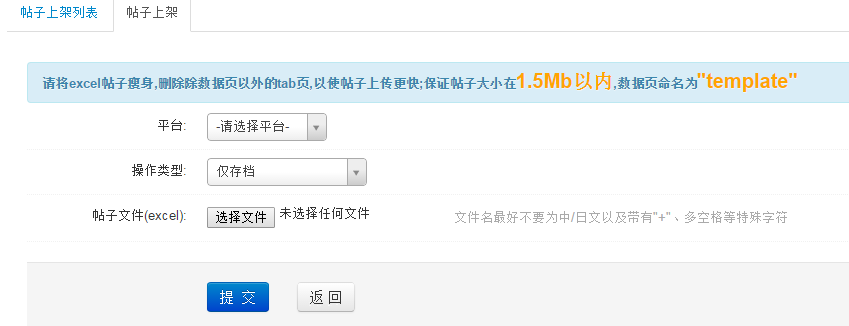

帖子上架
帖子上架列表:

- 默认查询自己上传帖子上传结果列表，去掉与我相关复选框勾选，查询所有上传帖子列表
- 上传帖子状态包含正在发送到服务器、正在等待反馈结果、帖子上传完成和累计十次获取结果失败，累计10次失败可点击重新提交按钮再次上传帖子
- 帖子列下载可以下载上传的帖子excel文件，结果报告列下载可以下载帖子上传是否成功结果，点击查看更多详情链接可以查看亚马逊上传帖子具体内容
帖子上架列表:

- 操作类型：仅存档，帖子excel文件仅仅存在ERP本地；同步到亚马逊服务器，帖子excel文件存在ERP本地，同时会上传到亚马逊后台；